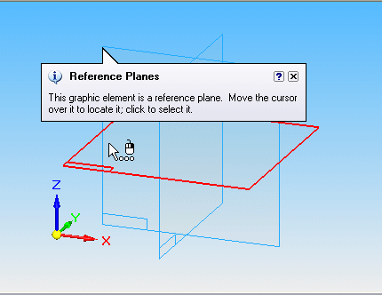
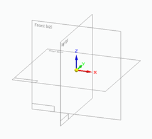
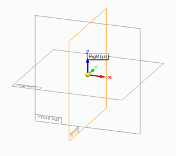
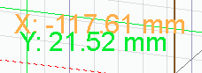
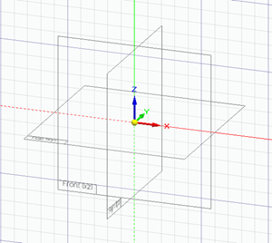

Layout tab (Customize dialog box)
The Layout tab specifies the general layout of the Solid Edge application window across all environments. It defines the arrangement, location, and show or hide state of docking windows, user assistance tools, and command bars for Solid Edge themes and for user-defined themes.
All of the options on the Layout tab have a matching counterpart in the Solid Edge Options dialog box.
- Theme
-
Specifies the Solid Edge theme or the user-defined theme to which the layout changes are applied. The changes apply across all environments.
- General
-
Specifies the general layout options when any Solid Edge document is open in any environment.
- Show Command Assistant tips
-
Displays command tips as you work in Solid Edge.
Example:
- Show basic tooltips
-
Displays brief tooltips when you pause over parts of the Solid Edge interface.
- Show enhanced tooltips
-
Displays additional information (text and an image) showing how you can use a command.
- Show video clips
-
Displays the same enhanced text, but it plays a brief video clip instead of showing an image.
- Part and Assembly
-
Specifies these additional layout options when a part, sheet metal, or assembly document is open.
- Start Part and Sheet Metal documents in
-
Specifies that Solid Edge starts in the Synchronous environment (direct edit) or the Ordered environment (history-based).
- PathFinder appearance
-
Specifies how PathFinder is displayed:
- Text with white background
-
Displays PathFinder in a vertical docking window with a white background.
- Gradient background
-
Displays PathFinder as a transparent form that floats in the graphics window. The graphics window uses the Gradient background (not shown).
- Show reference plane names
-
Displays the names of the base reference planes.
- Show plane orientation box
-
Displays the plane orientation views on the reference plane. For example, Front, Top and Right.
Show plane orientation box on
Show plane orientation box off


- Display XY readout
-
Displays the x and y coordinates of the cursor.

- Show grid
-
Displays the grid.

- Show base reference planes always
-
Base reference planes are always visible.
- Show base reference planes when starting command
-
Base reference planes only show when a command is started.
- Do not show base reference planes
-
Base reference planes are always hidden.
- Show and lock Design Intent advanced panel in the bottom of the graphic window
-
Specifies that the Advanced Design Intent panel is displayed at the bottom of the graphic window and cannot be moved.

- Show as a floating panel
-
Displays the Advanced Design Intent panel as a transparent floating panel, that can be dragged around in the document view.
- Make panel vertical
-
Displays the Advanced Design Intent panel in a vertical orientation that can be dragged around in the document view.
- When entering Ordered Profile/Sketch
-
Controls whether a new window is created when working with a profile or sketch. You can also specify whether the active window is oriented parallel to the profile plane when drawing a profile or a sketch.
These options are not available for synchronous documents.
- Create a new 2D window
-
Creates a new window when you draw a profile or a sketch. When this option is set, the new window is automatically oriented parallel to the profile plane.
- Draw directly in the active model window
-
Uses the existing window when you draw a profile or a sketch. When this option is set, you can specify whether the existing window is reoriented parallel to the profile plane using the option, Orient the window to the selected plane.
- Orient the model window to the selected plane
-
Orients the window parallel to the profile plane when set. This can make it easier to visualize complex profiles and to add relationships. When this option is cleared, the existing window orientation is maintained when drawing a profile or sketch.
- Draft
-
Specifies the additional layout options when a draft document is open.
- Show horizontal scroll bar
-
Displays the horizontal scroll bar of the active document.
- Show vertical scroll bar
-
Displays the vertical scroll bar of the active document.
- Save
-
Saves any changes to the active theme.
- Save As
-
Saves any changes to a new theme which you name.
- Delete
-
Deletes the active theme.
Note:You cannot delete the Balanced—Solid Edge Default.
- Reset
-
Restores the options on the Layout tab according to the type of theme selected in the Theme list.
-
For Solid Edge themes—The out-of-the-box configuration of the user interface for the selected theme is restored.
-
For user-defined themes—The settings on the Layout tab are restored to the defaults of the Solid Edge theme from which the user-defined theme is derived.
-